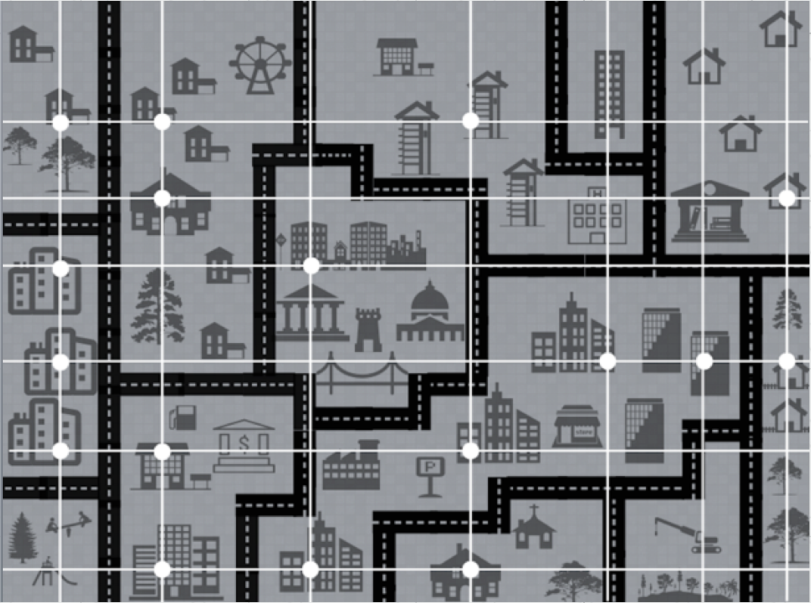
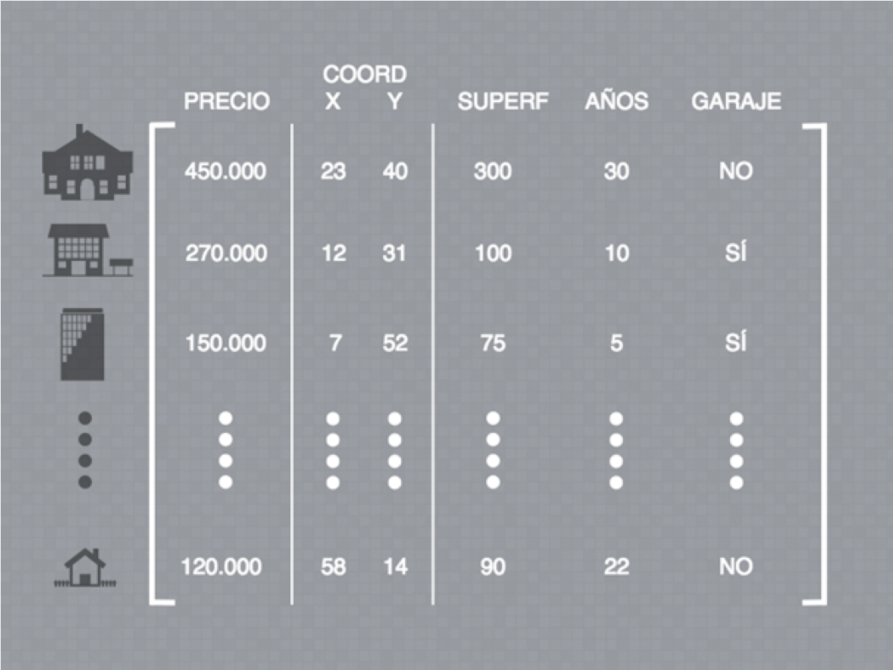
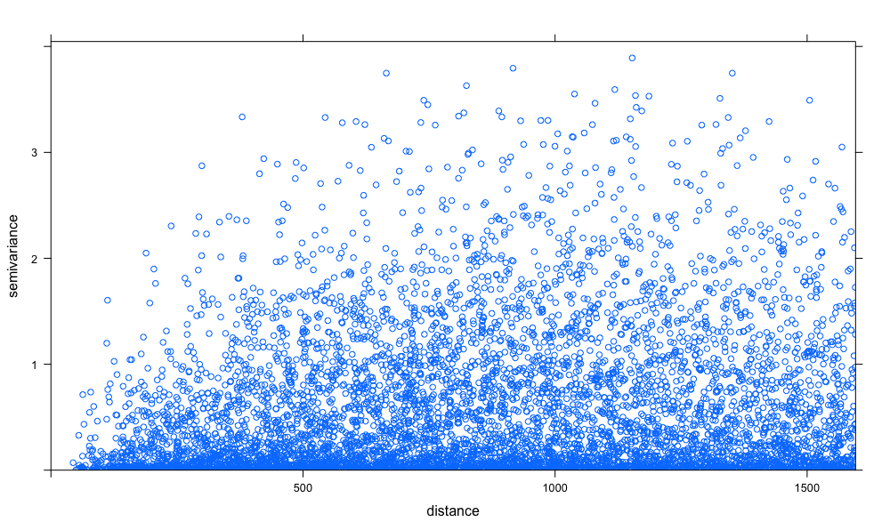
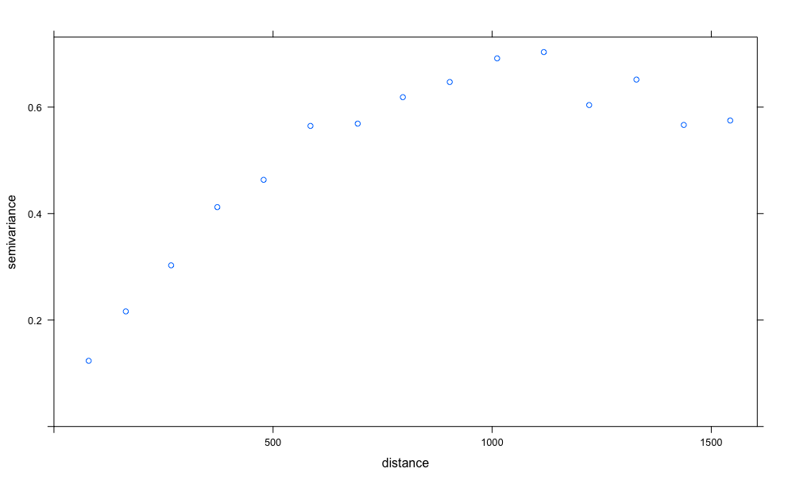

Modelo de predicción subespacial:
Regresión Multivariante Gaussiana Subespacial
12 de Septiembre 2017
Contenido de la tesis
Introducción
Marco Teórico
Algoritmo MGSR
Aplicaciones
Software
Introducción
Regresión Clásica
Conjunto de variables: $v_{1}$,...,$v_{n}$
p. ej. Quiero hallar $v_{1}$ en función del resto tal que $v_{1}=f(v_{2}$,...,$v_{n})$
¿Qué sucede si quiero hallar $v_{2}$ en función del resto?
$v_{2}=f^{'}(v_{1}$,$v_{3}$,...,$v_{n})$
$f \neq f^{'}$
Introducción
Regresión Multivariante
Dado un conjunto de variables $V$ siendo $V = V_{1} \cup V_{2}$
queremos hallar $V_{1}$ en función de $V_{2}$ tal que $V_{1}=G(V_{2})$
¿Qué sucede si quiero hallar un nuevo subconjunto $V^{'}_{1}$ en función de $V^{'}_{2}$ siendo $V = V^{'}_{1} \cup V^{'}_{2}$?
$V^{'}_{1}=G^{'}(V^{'}_{2})$
$G \neq G^{'}$
Objetivo
¿Y si $G = G^{'} = M$?
Tendríamos un único modelo que nos permitiría predecir cualquier subconjunto de $V$ en función del subconjunto complementario del mismo
Nuestro principal objetivo es desarrollar un modelo $M$ que rompa con la rigidez de los modelos clásicos de regresión
Supongamos que disponemos de un conjunto $V=\{v_{1},v_{2},v_{3},v_{4},v_{5}\}$
MODELO
REDUCCION DIMENSIONAL
PROCESOS GAUSSIANOS
MGSR
Marco teórico
- Reducción Dimensional
- Análisis de Componentes Principales
- Análisis de Correspondencias
- Análisis Factorial
- Sistemas Gifi
- Métodos Biplot
- Procesos Gaussianos
Reducción Dimensional
- Técnicas descriptivas
- Adaptabilidad al ojo humano
- Baja dimensionalidad
- Similaridad/Disimilaridad
- Máxima información
Reducción Dimensional
Análisis de componentes principales
K. Pearson (1901)
Sean $X=[X_{1},...,X_{p}]$ y $S=var(X)$ su matrix de covarianzas
La descomposición espectral de $S$ es $S=T \Lambda T^{'}$ donde $T^{'} T=T T^{'}=I$ con $T=[t_{1},...,t_{p}]$ y $\Lambda=diag(\lambda_{1},...,\lambda{p)}$
Las componentes principales de $X$ son las nuevas variables
\begin{equation} Y_{j}=X t_{j} \text{ , } j=1,...,p \end{equation}Reducción dimensional
Análisis de componentes principales
library(ggfortify)
autoplot(prcomp(iris[c[1:4])), data=iris, colour = 'Species')
Dos simples líneas de código nos permiten realizar un análisis exploratorio y descriptivo de nuestros datos de manera rápida y efectiva
Reducción dimensional
Análisis de Correspondencias
J. Benzécri (1901)
Tablas de contingencia
- Perfiles Fila
- Perfiles Columna
Proyección de ambos perfiles en un subespacio común
Reducción dimensional
Análisis de Correspondencias Múltiples
Extensión del Análisis de Correspondencias
Conjunto de matrices
- Filas fijas
- Columnas variables
Representación gráfica semejante al ACP para variables categóricas
Reducción dimensional
Análisis Factorial
C. Spearman (1904)
Búsqueda de variables no observables denominadas factores
- Factores comunes
- Factores únicos
Interpretabilidad de los factores comunes
Reducción dimensional
Análisis Factorial Múltiple
Extensión del Análisis Factorial
Técnica que agrupa variables cualitativas y cuantitativas en el mismo subespacio
Ponderaciones a través del inverso del primer valor propio:
- Variables cuantitativas (ACP)
- Variables cualitativas (AC)
Se asume equilibrio entre grupos
Reducción dimensional
Sistemas Gifi
A. Gifi (1981)
Minimización de la función de pérdida (loss function) a través de Mínimos Cuadrados Alternados (ALS)
Exploración y modelado de la relación entre dos o más conjuntos de variables
- OVERALS
- HOMALS
Reducción dimensional
Métodos Biplot
K. Gabriel (1971)
Representación de elementos (filas) y variables (columnas) en un mismo subespacio
- Variables > Vectores
- Elementos > Puntos
Reducción dimensional
Métodos Biplot
Sea $X_{N \times P}$ la matriz de partida compuesta por:
- $P$ variables cuantitativas
- $N$ individuos
Un Biplot es una representación gráfica de $X$ mediante marcadores fila $r_{1},...,r_{N}$ y marcadores columna $c_{1},...,c_{P}$ tal que $x_{ij} \approx r_{i}^{'} c_{j}$
$X \approx R C^{'}$
Reducción dimensional
Métodos Biplot
Para obtener esta aproximación aplicamos una Descomposición en Valores Singulares. Si $T=rank(X)$ entonces la factorización de $X$ se obtiene tal que
\begin{equation} X=U \Lambda V^{'}=\sum_{t=1}^T \lambda_{t} r_{t} c_{t} \end{equation}
donde $U$ es una $N \times T$ matriz unitaria, $\Lambda$ es una $T \times T$ matriz diagonal no negativa, y $V$ es una $P \times T$ matriz unitaria
Reducción dimensional
Métodos Biplot
\begin{equation} X \cong U_{(T)} \Lambda_{(T)} V_{(T)}^{'} = \sum_{t=1}^T \lambda_{t} r_{t} c_{t} \end{equation}
Siendo $\lambda_{t}$ los valores propios, $r_{t}$ y $c_{t}$ los vectores propios de filas y columnas respectivamente. Por tanto, $R$ y $C$ son fácilmente obtenibles tal que
\begin{equation} R = U_{(T)} \Lambda_{(T)}^{\psi} \\ C = V_{(T)} \Lambda_{(T)}^{1-\psi} \end{equation}
donde $0 \leq \psi \leq 1$
Reducción dimensional
Biplots Clásicos
JK-Biplot : $\psi = 1$ \begin{equation} R = U \Lambda \\ C = V \end{equation}
GH-Biplot : $\psi = 0$ \begin{equation} R = U \\ C = V \Lambda \end{equation}
Reducción dimensional
Interpretación
Elementos fila > Puntos
Elementos columna > Vectores
- Proyecciones $ \bot $ puntos sobre vectores $ \approx $ valor real
- Producto escalar vectores $ \approx $ matriz covarianzas
- Longitud vectores $ \approx $ desviación estándar de las variables
- Coseno del ángulo entre dos variables $ \approx $ correlación entre ellas
Propiedades
Reducción dimensional
Calidad de representación
| Global | $CA = \frac{\lambda_{1}+\lambda_{2}}{sum_{t=1}^T \lambda_{t}}$ |
| Filas | $CR = \frac{r^2_{jk}}{\sum_{k=1}^N r^2_{jk}}$ |
| Columnas | $CC = \frac{c^2_{jk}}{\sum_{k=1}^P c^2_{jk}}$ |
Reducción dimensional
Otros Biplots
| Biplot | Autor | Características |
| HJ | M.P. Galindo (1986) | Alta calidad de representación en filas y columna |
| MANOVA | H. Gabriel (1972) | Representación de grupos de elementos fila y variables |
| Generalizado | J. Vicente-Villardón (1992) | Permite considerar la importancia de los diferentes individuos y variables |
| No lineales | J. Gower y S. Harding (1988) | Trayectorias no lineales de los individuos |
| Interpolación | J. Gower y D. Hand (1995) | Superponen nuevos individuos proyectándolos sobre el subespacio de representación |
| Predicción | J. Gower y D. Hand (1995) | Infieren valores de las variables originales dado un punto sobre la representación subespacial |
| Multivía | Varios | Versiones Biplot de técnicas multivariantes de varias vías |
Reducción dimensional
Otros Biplots
- Meta-Biplot -- J. Martín-Rodríguez, P. Galindo y J.L. Vicente-Villardón (2002)
- Minería de datos -- V. Vairinhos
- Logístico -- J. Vicente-Villardón, M. Galindo-Villardón y A. Blázquez-Zaballos (2006)
- Canónico -- A. Vallejo-Arboleda, J. Vicente-Villardón y P. Galindo-Villardón (2006)
- Nominal -- J. Hernández-Sánchez y J. Vicente-Villardón (2016)
- Co-Tucker3 -- M. Rodríguez-Rosa (2016)
Marco teórico
- Reducción Dimensional
- Procesos Gaussianos
- Kriging
- Cokriging
Procesos Gaussianos
- Observaciones ocurren en un dominio contínuo (tiempo o espacio)
- Extensión de las distribuciones multivariantes gaussianas
Sea $y=\{y_{1},...,y_{n}\} $ una muestra de $n$ elementos y $x$ su dominio asociado
Procesos Gaussianos
Función de covarianza ideal
La función de covarianza del dominio contínuo se define como
$k(x,x^{\prime}) = \sigma^2_{f} exp \left[\frac{-(x-x^{\prime})^2}{2l^2}\right]$
- $f$ función de nuestra distribución
- $\sigma^2_{f}$ covarianza de la función $f$
- $l$ distancia o gradiente temporal entre $x$ y $x^{\prime}$
La función $k$ nos indica cuánto varían nuestros datos en función de la distancia o gradiente temporal en el que se encuentran
Procesos Gaussianos
Función de covarianza
En general los PG presentan ruido que hace que la distribución sea $y = f(x) +N(0,\sigma^2_{n})$ y por tanto
$k(x,x^{\prime}) = \sigma^2_{f} exp \left[\frac{-(x-x^{\prime})^2}{2l^2}\right] + \sigma^2_{n} \delta(x,x^{\prime})$
- $\delta(x,x^{\prime})$ delta de Kronecker
Procesos Gaussianos
Estimación
Para poder realizar una estimación $y_{*}$ de $y$ calculamos la función de covarianza asociada al dominio contínuo para todas las posibles combinaciones existentes entre cada observación tal que
$K_{*} = \begin{bmatrix} k(x_{*},x_{1}) & k(x_{*},x_{2}) & \dots & k(x_{*},x_{n}) \end{bmatrix} \text{ } K_{**} = k(x_{*},x_{*})$
El estimador se calcula tal que
$\hat{y}_{*}=K_{*}K^{-1}y$
Y la varianza del estimador es
$var(y_{*})=K{**}-K_{*}K^{-1}K_{*}^{T}$
Procesos Gaussianos
Geoestadística
D. Krige (1951)
- Minería
- Basado en la experiencia
G. Matheron (1962)
- École de Mines (Paris)
- Formulación matemática
Aplicaciones en hidrología, geología, agricultura, geografía, meteorología, ecología, biología, etc
Procesos Gaussianos
Datos geoestadísticos
| Variable regionalizada $z(x_{\alpha})$ | Variables aleatorias $Z(x_{\alpha})$ |
|  |  |
Procesos Gaussianos
Conceptos geoestadísticos
La media de $Z(x_{\alpha})$ se defime como $E[Z(x_{\alpha})]=m$
La covarianza depende de la distancia $h$ entre pares de puntos $x_{\alpha}$ y $x_{\beta}$
$Cov(Z(x_{\alpha}),Z(x_{\beta}))=E[(Z(x_{\alpha})-m) \cdot (Z(x_{\alpha}+h)-m)]$
Procesos Gaussianos
Conceptos geoestadísticos
La media de los incrementos $x_{\alpha}$ y $x_{\alpha}+h$ es nula
$E[Z(x_{\alpha}+h)-Z(x_{\alpha})]=0$
La varianza de los incrementos es
$var(Z(x_{\alpha}+h)-Z(x_{\alpha}))=2\gamma(h)$
donde $\gamma(h)$ es la semivarianza que es
$\gamma(h)=\frac{1}{2}(Z(x_{\alpha}+h)-Z(x_{\alpha}))^2$
Procesos Gaussianos
Variograma $\gamma^{*}$
| Variograma en nube $\frac{1}{2}(z(x_{\alpha}+h)-z(x_{\alpha}))^2$ | Variograma experimental $\frac{1}{2n}\sum_{\alpha=1}^{n}(z(x_{\alpha}+h)-z(x_{\alpha}))^2$ |
|  |  |
Procesos Gaussianos
Variograma teórico
- Nugget ($nug$): Valor de la semivarianza para distancias cercanas a cero
- Sill ($b$): Valor constante que alcanza la semivarianza a una distancia $h$ determinada
- Rango ($a$): Valor de $h$ al que alcanzamos el sill $b$
Procesos Gaussianos
Covarianza espacial
El variograma teórico se obtiene a través de una función lineal. Esta función puede ser combinación lineal de una subserie de variogramas o covarianzas espaciales
$\gamma(h) = C(0) - C(h) $
A su vez se define la correlación espacial como
$\rho(h) = \frac{C(h)}{C(0)} $ siendo $C(0)=b$
Procesos Gaussianos
Variograma anidado
La combinación lineal de variogramas se denomina variograma anidado y se define
$\gamma(h)=\sum_{u=0}^S\gamma_{u}(h)=\sum_{u=0}^Sb_{u}g_{u}(h)$
donde $g_{u}(h)$ son variogramas normalizados y $b_{u}(h)$ es el sill de cada uno de ellos
Los variogramas normalizados son funciones gaussianas (Gaussiana, Esférica, Exponencial, Cuadrática, Lineal...)
Por tanto la relación entre la correlación espacial $\rho(h)$ y el variograma teórico $\gamma(h)$ es
$\gamma(h)=b(1-\rho(h))$
La estimación de variogramas normalizados se realiza a través de ajustes lineales como los mínimos cuadrados generalizados, ordinarios, ponderados...
Procesos Gaussianos
Kriging Simple
La estimación espacial de los puntos $x_{0}$ del mallado se realiza como combinación lineal
$Z^{*}(x_{0})=m+\sum_{\alpha=1}^{n}w_{\alpha}(Z(x_{\alpha})-m)$
donde $Z^{*}$ es la $Z$ estimada. Finalmente el sistema de ecuaciones se reduce a
$\sum_{\beta=1}^n w_{\beta}C(x_{\alpha}-x_{\beta})=C(x_{\alpha}-x_{0}) \text{ } \alpha=1,...,n$
Existen otros tipos de kriging como el ordinario, el universal...
Procesos Gaussianos
Cokriging
El método cokriging es la versión o extensión multivariante del kriging. La técnica del cokriging basa su principio en la correlación entre muestras debido a su localización espacial
Posibles distribuciones de las muestras:
- Heterotopia: Puntos no coincidentes
- Heterotopia parcial: Algunas variables comparten localizaciones
- Isotopia: Todas las variables se representan en los mismos puntos
Procesos Gaussianos
Variograma Cruzado
Un variograma cruzado se define como la mitad del producto del incremento de dos variables
Dadas $P$ variables siendo $i,j=1,...,P$ los variogramas cruzados posibles son $\frac{P(P+1)}{2}$ de los cuales $P$ variogramas son directos $i=j$ y $\frac{P(P-1)}{2}$
Como resultado del cálculo de cada variograma obtenemos una matriz $\Gamma(h)$ de tamaño $P \times P$ que es combinación lineal de $\Gamma_{u}(h)$ tal que $\Gamma(h)=\sum_{u=0}^{S}\Gamma_{u}(h)$
El variograma cruzado se define como
$\gamma_{ij}^{*}(h)=\dfrac{1}{2n}\sum_{\alpha=1}^N(z_{i}(x_{\beta})-z_{i}(x_{\alpha}))\cdot(z_{j}(x_{\beta})-z_{j}(x_{\alpha}))$
Procesos Gaussianos
Modelo lineal de corregionalización
Al igual que hemos hecho para el caso univariante, hemos de ajustar un modelo a cada uno de los variogramas cruzados
La función de covarianza espacial es
$C(h)=\sum_{u=0}^{S}B_{u}\rho_{u}(h)$
donde $B_{u}$ es la matriz de corregionalización de dimensión $P \times P$ semidefinida positiva
Procesos Gaussianos
Cokriging Simple
El cokriging simple se apoya en el conocimiento de las medias intrínsecas de las variables analizadas
$Z_{i_{0}}^{*}(x_{0})=m_{i_{0}}+\sum_{i=1}^{P}\sum_{\alpha=1}^{n}w_{\alpha}^{i}(Z_{i}(x_{\alpha})-m_{i})$
donde $i_{0}$ es la variable a estimar e $i$ corresponden a las $P$ variables analizadas
Existen diferentes tipos como el Cokriging ordinario, universal, colocado, factorial...
Regresión Multivariante Gaussiana Subespacial
(MGSR)
MGSR
Algoritmo
MGSR
Coordenadas Subespaciales
Partimos de una matriz $X_{N \times P}$ con $N$ elementos y $P$ variables, ninguna de ellas de dominio contínuo y estandarizada por columnas
Aplicando una técnica de reducción dimensional obtenemos una serie de coordenadas subespaciales $R_{N \times S}$ para cada uno de los $N$ elementos en $T$ subespacios
Con $X$ y $R$ conformamos la matriz $Z(u)=[X(R)]$
donde $u$ son las coordenadas subespaciales intrínsecas a $Z$
$Z$ es semejante a las matrices empleadas en Procesos Gaussianos
MGSR
Variogramas Cruzados Subespaciales
El vector de distancias intermedias o lag $h$ se compone de $k$ elementos tal que $h=\{h_{1},h_{2},...,h_{k}\}$
El variograma experimental se define como
$\Gamma^{*}(h_{k})=\gamma_{ij}^{*}(h_{k})$
donde $i,j={1,...,P}$
| $\gamma_{ij}^{*}(h_{k})=z^{T}A(h_{k})z$ |
MGSR
Variogramas Cruzados Subespaciales
$A(h_{k}) = \frac{M_{i}(h_{k}) - \eta_{ij}(h_{k})}{J(h_{k})}=\frac{1}{J(h_{k})}$ $\begin{bmatrix} m_{1}(h_{k}) & -\eta_{12} & \dots & -\eta_{1N} \\ -\eta_{12} & m_{2}(h_{k}) & \dots & -\eta_{2N} \\ \vdots & \vdots & \ddots & \vdots \\ -\eta_{1N} & -\eta_{2N} & \dots & m_{N}(h_{k}) \end{bmatrix}$
donde $m_{i}$ es el número de pares que tiene el elemento $i$ a la distancia $h_{k}$ y
\begin{equation*} \eta_{ij}= \left\lbrace \begin{array}{l} 1 \text{ para pares \{i,j\} que se encuentren en distancias } h_{k} \\ \\ 0 \text{ para pares \{i,j\} que no se encuentren en distancias } h_{k} \\ \end{array} \right. \end{equation*}
MGSR
Variogramas Cruzados Subespaciales
\begin{equation*} \Gamma^{*}(h_{k})= \begin{bmatrix} z_{1}A(h_{k})z^{T}_{1} & z_{1}A(h_{k})z^{T}_{2} & \dots & z_{1}A(h_{k})z^{T}_{P} \\ z_{2}A(h_{k})z^{T}_{1} & z_{2}A(h_{k})z^{T}_{2} & \dots & z_{2}A(h_{k})z^{T}_{P} \\ \vdots & \vdots & \ddots & \vdots \\ z_{P}A(h_{k})z^{T}_{1} & z_{P}A(h_{k})z^{T}_{2} & \dots & z_{P}A(h_{k})z^{T}_{P} \end{bmatrix} \end{equation*}
$\gamma^{*}_{ij}=[\Gamma^{*}_{ij}(h_{1}),...,\Gamma^{*}_{ij}(h_{K})]$
CV <- crossvariogram(coord=data[,1:2],values=data[,3:6],n=12)
plot.crossvariogram(CV)
MGSR
Modelo Lineal Corregionalizado
Una vez calculada los variogramas cruzados subespaciales $\Gamma^{*}(h_{k})$ hemos de ajustar un modelo lineal $\Gamma(h)$ tal que
| $\Gamma(h)=\sum_{s=1}^{S}B_{s}g_{s}(h)$ |
$B_{s}$ es la matriz de corregionalización $N \times N$ de sills y $g_{s}(h)$ las funciones ajustadas con rango fijo para cada una de ellas
Para el modelo global hemos de minimizar
| $WSS(B)=\sum_{i=1}^{p}\sum_{j=1}^{p}WSS(b_{ij})$ |
MGSR
Modelo Lineal Corregionalizado
La función de mínimos cuadrados ponderados para cada sill es
$WSS(b_{ij})=(\gamma_{ij}^{*}-Gb_{ij})^TCov(b_{ij})(\gamma_{ij}^{*}-Gb_{ij})$
$G$ es la matriz $K \times S$ correspondiente a las distintas funciones de los variogramas anidados
La matriz $Cov(b_{ij})$ es la matriz de varianza-covarianza subespacial que representa la variabilidad de nuestra muestra en función de las diferentes distancias $h$
MGSR
Matriz Varianza-Covarianza Subespacial
La matriz $Cov(b_{ij})$ representa la variabilidad de nuestra muestra en función de las diferentes distancias $h$ y es equivalente a
\begin{equation} Cov(\gamma_{ij}^{*}(h_{k}),\gamma_{ij}^{*}(h_{k'}))=tr(A(h_{k})C(b_{ij})A(h_{k'})C(b_{ij}))+ tr(A(h_{k})C(b_{ii})A(h_{k'})C(b_{jj})) \end{equation}
donde $C(b_{ij})=\sum_{s=1}^{S}b_{ij,s}\rho_{s}$ es la matriz de covarianzas entre $z_{i}$ y $z_{j}$ y $\rho_{s}$ es la matriz de correlación subespacial para cada variograma normalizado
| $Cov(\gamma_{ij}^{*}(h_{k}),\gamma_{ij}^{*}(h_{k'}))=\sum_{r=1}^{S}\sum_{q=1}^{S}[(b_{ij,r}b_{ij,q}+b_{ii,r}b_{jj,q})tr(\rho_{r}A(h_{k})\rho_{q}A(h_{k'}))]$ |
MGSR
Algoritmo LMC subespacial
| Paso 0: | Inicializamos $\tau$ a 0 y evaluamos $WSS(\widehat{B}^{\tau})$ | |||
| Paso 1: | $\Gamma_{s_{0}}^{*}(h_{k})=\Gamma^{*}(h_{k})-\sum_{s\neq s_{0}}^{S}\widehat{B}_{s}^{\tau}g_{s}(h_{k}),\text{ }k=1,...,K$ | |||
| Paso 2: | $ \widehat{b}_{ij,s_{0}}^{\tau+1}=(g_{s_{0}}^{T}Cov(\widehat{b}_{ij}^{\tau})^{-1}g_{s_{0}})^{-1}g_{s_{0}}^{T}Cov(\widehat{b}_{ij}^{\tau})^{-1}\gamma_{ij,s_{0}}^{*} $ | |||
| Paso 3: |
|
|||
| Paso 4: | Si la diferencia entre $WSS(\widehat{B}^{\tau+1})$ y $WSS(\widehat{B}^{\tau})$ es mayor que $\delta \rightarrow$ Paso 1 |
RES <- lmc(CV= crossvariog,fun= c("Lin","Pow"),a= c(0.4,1.5))
plot.crossvariogram(CV,RES)
MGSR
Cokriging Simple
Partiendo de $Z(u_{\alpha})$ queremos hallar $Z^{*}(u_{0})$ siendo $u_{0}$ las coordenadas subespaciales de nuestro mallado. Para ello, hemos de hallar $W_{s}$
$C(u_{\alpha}-u_{\beta})W_{s}=B_{s} \otimes \rho_{s}(u_{0}-u_{\alpha})$
donde $C(u_{\alpha}-u_{\beta})=\sum_{s=1}^{S} B_{s} \otimes \rho_{s}(u_{\alpha}-u_{\beta})$
Y por tanto
| $Z_{i}^{*}(u_{0})= \sum_{i=1}^{P}\sum_{\alpha=1}^{N}w_{\alpha}^{i}Z_{i}(u_{\alpha})$ | $var(Z-Z^{*})=C(0)-\sum_{s=1}^{S} c_{s}^{T} C c_{s}$ |
xygrid <- GRID_MGSR(DAT = coordinates,lag = 0.05)
Z <- cokrig(RES,xygrid)
MGSR
Validación Cruzada
Suprimimos un elemento $Z(u_{\alpha})$ estimando el resto $Z_{i}^{*}(u_{[\alpha]})$
| Desviación del valor cuadrático medio | $\frac{1}{N}\sum_{\alpha=1}^{N}(Z_{i}(u_{\alpha})-Z_{i}^{*}(u_{[\alpha]}))^2 \cong 0$ |
| Media cuadrática del error estimado | $\frac{1}{N}\sum_{\alpha=1}^{N}\frac{(Z_{i}(u_{\alpha})-Z_{i}^{*}(u_{[\alpha]}))^2}{\sigma^2_{[\alpha]}} \cong 1$ |
Siendo $\sigma^2_{[\alpha]}$ la desviación típica del error predicho en la posición $u_{\alpha}$
Valid <- CrossValidation(RES)
MGSR
Predicción
MGSR
Predicción